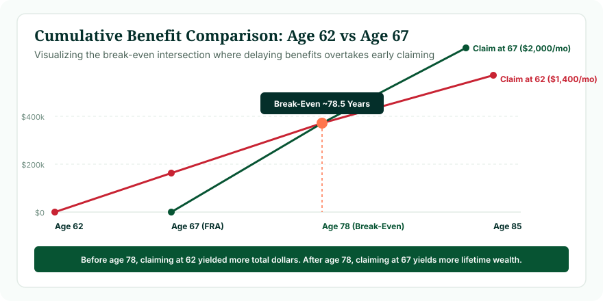

In standard nominal dollar terms (assuming zero investment returns), the primary Social Security break-even ages for workers with an FRA of 67 are:
- Claiming at 62 vs Claiming at FRA (67): Break-even occurs at approximately age 78.5 (78 years and 8 months). If you live past 78.5, claiming at 67 produces more total lifetime money.
- Claiming at 62 vs Claiming at 70: Break-even occurs at approximately age 80.4 (80 years and 5 months). If you live past 80.4, claiming at 70 produces more total lifetime money.
- Claiming at FRA (67) vs Claiming at 70: Break-even occurs at approximately age 82.5 (82 years and 6 months).
Break-even is an actuarial guide, not a guarantee. It shows the age you must survive past for the patience of delaying benefits to pay off in cumulative cash. Before running break-even math, determine your statutory milestone dates using our Social Security Age Calculator.
What Is Social Security Break-Even Age?
The Social Security break-even age is the exact point in your lifetime when the total cumulative dollars received from delaying your claim equal the total cumulative dollars you would have received by claiming earlier.
Every claiming decision embodies an inherent mathematical tension:
- The Early Claiming Path: Starts cash flow sooner. You collect 60 monthly checks between ages 62 and 67, building an early cumulative cash lead. However, each check is permanently reduced (70% of PIA).
- The Delayed Claiming Path: Receives zero dollars for the first 60 months. But once payments begin at 67 or 70, each monthly check is significantly larger. Every month, the larger check erodes the early claimer's initial cash lead until the two totals intersect.
Why Does Social Security Have a Break-Even Point?
The break-even phenomenon exists because the Social Security Administration's early reduction and delayed retirement formulas were designed to be actuarially neutral based on historical population mortality tables:
"If an individual lives exactly to the average life expectancy of their demographic cohort, the total cumulative lifetime dollars paid by Social Security should theoretically be approximately identical whether they claim at 62, Full Retirement Age, or 70."
Because nobody knows their exact date of death, understanding the break-even age allows you to evaluate your claiming decision against your health, family medical history, and personal longevity expectations.
Break-Even Age Is Not the Same as Full Retirement Age
Retirees often confuse their Full Retirement Age with their break-even age:
Full Retirement Age (FRA) is a statutory milestone (age 66 to 67) that defines when you are legally entitled to 100% of your Primary Insurance Amount without early haircuts.
Break-Even Age is an actuarial calculation point (typically ages 78 to 83) that determines when delayed benefits surpass early benefits in total cumulative dollars collected.
How to Calculate Social Security Break-Even Age
The mathematical equation for calculating a nominal Social Security break-even point is:
The Break-Even Equation
Adding the resulting break-even months to the delayed claiming age provides your exact calendar crossover age.
Demonstration: 62 vs 67 on a $2,000 PIA
Early Benefit (Age 62): $2,000 × 70% = $1,400 / month.
Delayed Benefit (Age 67): $2,000 × 100% = $2,000 / month.
Months Delayed: 5 years × 12 months = 60 months.
Early Cash Head Start: 60 months × $1,400 = $84,000 collected by age 67.
Monthly Payout Advantage: $2,000 - $1,400 = $600 / month.
Catch-Up Time: $84,000 ÷ $600 = 140 months (11 years and 8 months).
Break-Even Age: Age 67 + 11 years and 8 months = 78 years and 8 months (~78.7 years).

Figure 1: Cumulative lifetime benefit trajectory comparing early claiming at 62 with standard claiming at FRA 67.
Social Security Break-Even: Claiming at 62 vs Full Retirement Age (67)
Between age 62 and Full Retirement Age 67, the nominal break-even age is consistently 78.5 to 78.7 years across all Primary Insurance Amount levels:
- Before Age 78.5: The person who claimed at 62 has collected more total dollars in their bank account.
- At Age 78.5: Both individuals have collected exactly the same cumulative dollar sum.
- After Age 78.5: The person who waited until 67 pulls ahead permanently, accumulating tens of thousands of extra dollars every year they live.
Social Security Break-Even: Claiming at 62 vs Claiming at 70
Comparing earliest claiming (62) against maximum delayed claiming (70) creates the widest cash spread:
- Early Head Start: A 62-year-old collects 96 monthly checks ($1,400 × 96 = $134,400) before the 70-year-old collects a single dollar.
- Delayed Monthly Payout: At 70, the delayed claimer receives 124% of PIA ($2,480/mo)—an extra $1,080 each month.
- Catch-Up Duration: $134,400 ÷ $1,080 = 124.4 months (10 years and 4.4 months).
- Break-Even Age: 80 years and 4.5 months.
- If you live to age 85, waiting until 70 produces over $50,000 more in cumulative wealth than claiming at 62. At age 90, the advantage surpasses $115,000!
Social Security Break-Even: Claiming at FRA (67) vs Claiming at 70
Between Full Retirement Age 67 and age 70:
- Cash Head Start: 36 months × $2,000 = $72,000 collected between 67 and 70.
- Monthly Advantage: $2,480 - $2,000 = $480 / month.
- Catch-Up Duration: $72,000 ÷ $480 = 150 months (12 years and 6 months).
- Break-Even Age: 82 years and 6 months.
Figure 2: Four strategic pillars that dictate whether delaying past early claiming makes financial sense for you.
Why There Is No Single Universal Break-Even Age
While nominal calculations produce clean numbers (78.5, 80.4, 82.5), your actual break-even age is personal and dynamic because real-world retirements are shaped by three compounding variables:
1. The Impact of Cost-of-Living Adjustments (COLA)
Federal COLAs increase benefits by a percentage. Because the percentage applies to a larger base benefit for delayed claimers, dollar increases are larger. Compounding annual COLAs accelerate the catch-up rate, shifting the nominal break-even point several months earlier.
2. Taxes & Investment Opportunity Costs
- Taxation of Benefits: Up to 85% of Social Security benefits can be subject to federal income tax if combined income exceeds statutory thresholds ($25,000 for single filers, $32,000 for married joint filers). Higher taxes on delayed checks can push the break-even age later.
- Investing Early Checks: If a 62-year-old invests their $1,400 monthly checks in an index fund yielding 5% real annual returns, the delayed claimer at 67 must overcome not just the $84,000 principal, but also the accumulated compound market growth. This shifts the real break-even age well into the mid-80s.
3. Spousal and Survivor Benefit Dimensions
Break-even calculations that only evaluate one individual's lifespan overlook household survivor protection:
When the higher-earning spouse delays claiming until age 70, they lock in the highest possible monthly benefit. If they pass away first, their surviving spouse steps into that maximum 124% benefit for the remainder of their life. Even if the higher earner dies at 75 (before breaking even individually), the surviving spouse may collect the elevated benefit into their 90s, producing an overwhelming net household gain!
Does Break-Even Age Tell You the Best Age to Claim?
No. Break-even analysis is an essential mathematical tool, but it should never be the sole driver of your retirement decision. You cannot eat cumulative dollars when you are 63 and need immediate cash to pay medical bills or keep your home. Liquidity, portfolio health, debt levels, and lifestyle desires often outweigh pure mathematical optimization.
For a complete strategic decision framework, consult our comprehensive guide: What Is the Best Age to Claim Social Security?.
A 5-Step Process Before Making Your Decision
- Determine Your Statutory FRA: Use the Social Security Age Calculator to find your exact birth-year FRA.
- Obtain Your Official SSA Estimate: Download your current Social Security Statement at SSA.gov to view your baseline Primary Insurance Amount.
- Model Your Household Longevity: Honestly evaluate personal health, lifestyle, and parental longevity.
- Assess Spousal Age & Earnings Gap: Coordinate claiming timing between higher- and lower-earning spouses.
- Evaluate Non-Social Security Assets: Review whether 401(k), pension, or IRA assets can bridge living costs to let Social Security grow.
Common Break-Even Calculation Mistakes
- Assuming You Must Live to 85 to Win: As shown, breaking even between 62 and 67 occurs before age 79—an age that the majority of healthy 62-year-olds reach.
- Ignoring Spousal Survivor Benefits: Looking only at single-life break-even while ignoring the lifetime security of a surviving spouse.
- Assuming Guaranteed High Investment Returns: Assuming early Social Security checks can easily beat an 8% guaranteed risk-free government return in volatile markets.
Frequently Asked Questions
What is the Social Security break-even age?
The break-even age is the age at which the total cumulative dollars received from delaying benefits equal and surpass the total dollars collected from claiming early.
What is the break-even age between 62 and 67?
For an FRA of 67, the nominal break-even age is approximately 78.5 years (78 years and 8 months).
What is the break-even age between 62 and 70?
Between claiming at 62 and waiting until 70, the nominal break-even point arrives at approximately age 80.4 (80 years and 5 months).
What is the break-even age between 67 and 70?
Between FRA 67 and age 70, the nominal break-even point is approximately 82.5 years (82 years and 6 months).
Does annual COLA change the break-even age?
Because COLA applies compounding percentage increases to a higher monthly base benefit, it slightly accelerates the catch-up rate, moving break-even a few months earlier.
How do investment returns affect the break-even point?
Investing early checks at positive real after-tax returns shifts the break-even point later, often into the mid-80s.
Methodology & Verification Standards
This mathematical analysis was developed by Navjeet Kamboj using statutory benefit multipliers codified in Title II of the United States Social Security Act:
- Actuarial Reduction Rates: 42 U.S. Code § 402(q) (Early claiming reduction tiers).
- Delayed Credit Accruals: 42 U.S. Code § 402(w) (Two-thirds of 1% monthly delayed credit rate).
- Mathematical Modeling: Nominal break-even equations assume zero discount rate and uniform inflation adjustments across cohorts.
- Mortality Benchmarks: Social Security Administration Period Life Tables (Actuarial Study No. 120).